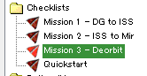
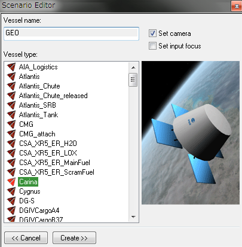
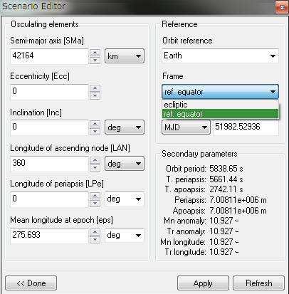
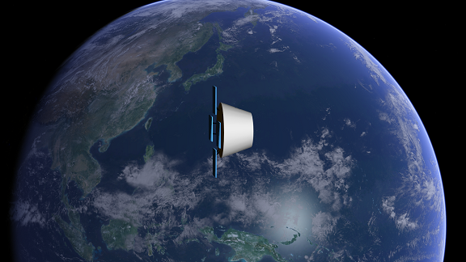
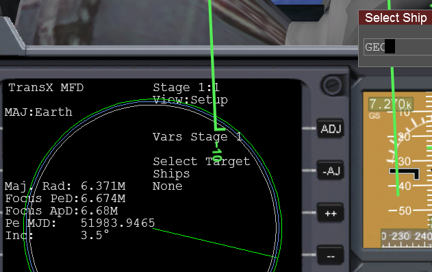
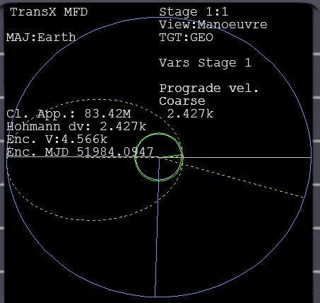
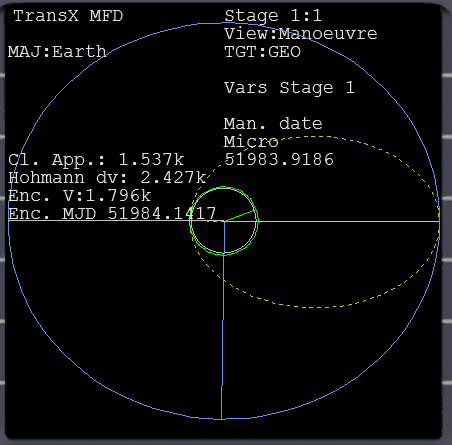
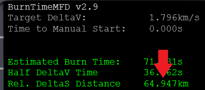
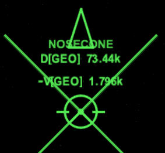
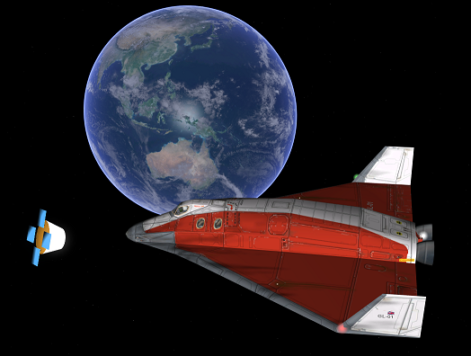

このふたつの条件を満たす軌道が、静止軌道ということになります。
地上から見た位置が変わらないため、通信や気象観測などの衛星に用いられます。
今回は、ChecklistsフォルダのMission 3 - Deorbitのシナリオを使用します。

この記事では、「あらかじめダミーを目標軌道に置いて、そこへ向かって飛ぶ」という方法を紹介します。
シナリオエディタとTransXの基本操作については、以下の記事を参照してください。
シナリオエディタを起動する。
Newボタンをクリック。
Carinaを選択して、適当な名前をつける。
Createをクリック。

作成したダミー衛星を選択した状態で、Editをクリック。
Orbital elementsをクリック。
まず最初に、Frameと書かれた下のリストをクリックして、ref. equatorを選択。
Semi-major axis（軌道長半径）を42164(km)にする。
EccとIncの両方をゼロにする。
Applyをクリック。

Mean longitude at epochの数値を変えることで、位置を移動させることができます。
例えば、「ひまわり」のように日本を観測できる位置に設定することも可能です。

TransXを使って、静止軌道にいるダミー衛星とランデブーします。
ミール(Mir)にドッキングしているデルタグライダー(GL-01)を選択。
TransXを開く。
Select TargetでADJをクリックしてShipsにする。
++をクリックして、作成しておいた衛星の名前を入力してEnter。

View:ManoeuvreでPrograde vel.を選択。
ENTをクリックして2427と入力。※

※Hohmann dvと同じ数字
Man. dateを操作して、できるだけCl. App.を小さくする。

Man. dateの時刻が近づいてきたら、ミールとのドッキングを解除。
このマニューバを実行して静止軌道へと向かいます。
Burn time calculatorを使って、相対速度を合わせるのに必要な距離を計算できます。

Docking MFDを開いてTGTをクリック。
作成したダミーの衛星を選択。
HUDをクリックすると、HUD上に距離が表示される。
さきほど計算した距離になったら機首をマーカーに向けて加速する。※

※この作業によって、軌道傾斜角と軌道速度を同時に一致させることができます。
ランデブーしたら、ドッキングの要領でターゲットに接近。
ダミーの衛星と同じ位置に宇宙船を置いて、相対速度をゼロにする。

これで静止軌道に乗れたことになる。
シナリオエディタを開いて、ダミーの衛星を削除する。